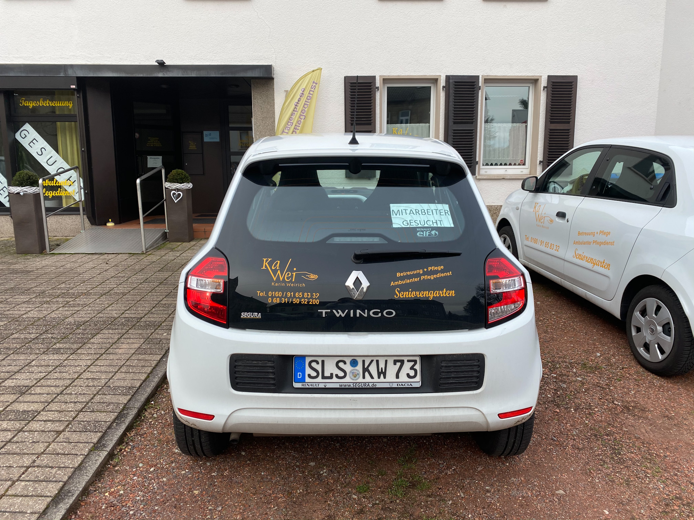
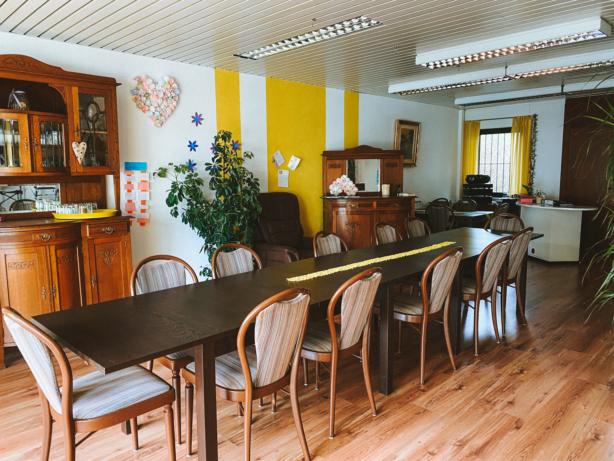
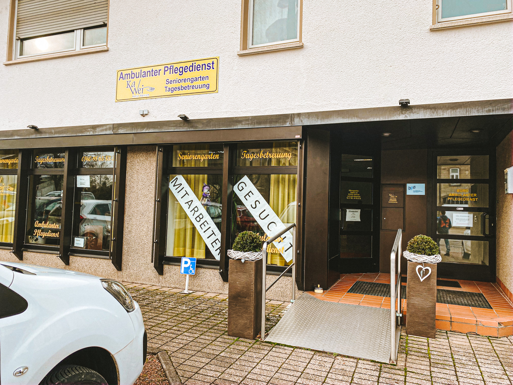
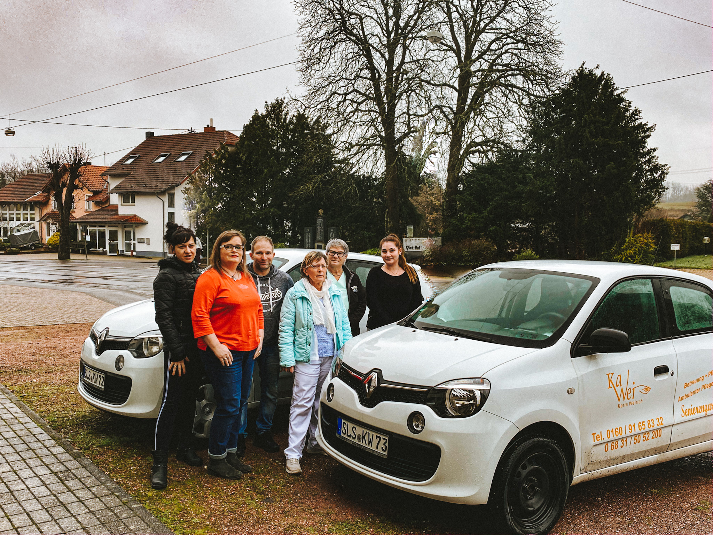

Herzlich willkommen auf unserer Homepage
Wir bieten Ihnen individuelle Pflege, Betreuung, Tagesbetreuung und Beratung - im Alter, bei Krankheit und/oder
Pflegebedürftigkeit. Wir würden uns freuen, Sie kennenzulernen!

Ambulante Pflege in ihrer Häuslichkeit
- Häusliche Betreuung
- Hauswirtschaftliche Versorgung
- 24h Bereitschaftsdienst für Notfälle
- Begleitung außerhalb des Hauses
- Verhinderungspflege
Mehr erfahren

Seniorengarten
- Betreuung in familiärer und wohnlicher Atmosphäre
- spielerisches Gedächtnistraining
- gemeinsame Mahlzeiten
- ausruhen und entspannen in unseren gemütlichen Ruhesesseln
- behindertengerechte sanitäre Einrichtungen
- Aufenthalt im Freien in unserem geschützten Garten
Mehr erfahren

Weiterer Service
- Feststellung des Pflegebedarfs
- Unterstützung bei Anträgen
- Vermittlung von Dienstleistungen, z.B.:
- Fußpflege
- Friseur
- Hausnotruf

Beratung
- Beratung pflegender Angehöriger
- Kostenlose Beratung:
- in unseren Räumlichkeiten
- telefonisch
- bei ihnen zu Hause
Zum Kontaktformular